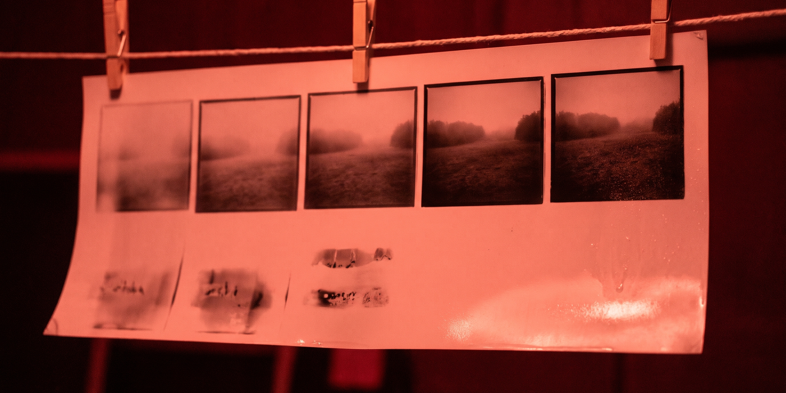

How the print is made
imagen_with_refinement.py takes your text prompt and uses Gemini to refine it against the official Imagen Prompt Guide. The enhanced prompt then goes to Imagen 3 (imagen-3.0-generate-002), and the finished image is saved locally as a PNG with a unique, timestamped filename. For the direct route with no refinement step, imagen_no_refinement.py sends your prompt as written.
Features
- Imagen 3 powered, built on the Google Gen AI Python SDK (
google-genai) - Gemini prompt refinement for better detail and prompt adherence
- Customizable aspect ratio (1:1, 3:4, 4:3, 9:16, 16:9), widescreen 16:9 by default
- Adjustable image count, 1 to 4 images per prompt
- Safety filtering at BLOCK_LOW_AND_ABOVE
- Local storage with unique filenames, and a plain command-line interface
Getting started
Python 3.12 or newer is recommended. Install the dependencies, then put your Google Generative AI API key in a .env file as GOOGLE_API_KEY:
pip install -r requirements.txt python imagen_with_refinement.py
The script asks for your prompt, aspect ratio, and image count, then saves the generated image in the same directory.